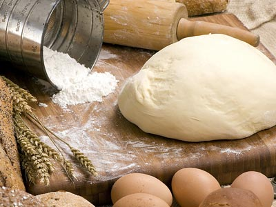
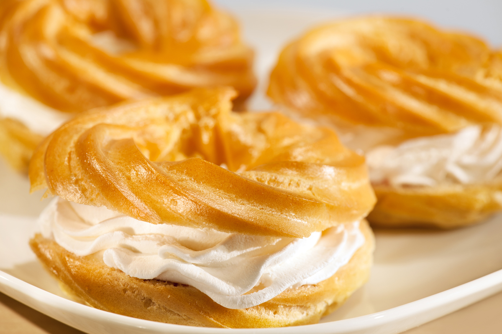

Дріджді для тіста беруть свіжі, борошне - сухе. Борошно попердньо просівають, видаляючи сторонні домішки і збагачуючи його повітрям. Дріждове тісто готують двома способами - опарним і безопарним. Для приготування опари всю норму подрібнених дріжджів залийте всією кількістю рідини, вказаною в рецепті, додайте цукор(цукор пісок), жовтки та борошно. Рідина, в якій розводять дріжджі повинна бути теплою. Холодна або надто гаряча вода сповільнює бродіння. Молоко покращує смак і аромат дріжджових пирогів, а у готового виробу скоринка виходить блискуча і красива.Готовність тіста визначають за його однорідністю, відсутністю грудочок.Добре вимішане тісто легко відстає від рук і стінок посуду. Діжу закривають кришкою і ставлять на 3-4 год для бродіння у тепле місце зтемпературою 35-40°С.
Коли тісто збільшиться в об’ємі у 1,5 раза його обминають 1-2 хв і знову залишають для бродіння, в процесі якого тісто обминають ще один-два рази. Закінчення бродіння визначають за зовнішніми ознаками: тісто збільшується в об’ємі у 2,5 рази, поверхня його опукла, воно набуває приємного спиртового запаху.
Безопарний спосіб застосовують для одержання тіста слабкої консистенції для млинців, оладок і для виробів з малою кількістю здоби (цукру, масла,яєць), а опарний — з великою кількістю здоби. Безопарне дріжджове тісто для печених малоздобних виробів. Для приготування тіста всі продукти, які передбачені рецептурою, змішують в один прийом. У діжу тістомісильної машини (або інший посуд для приготування тіста) вливають підігріту до температури 35-40 °С воду, попередньо розведені у теплій воді і проціджені дріжджі, цукор, сіль, додають меланж (замарожені яйцепродукти) або яйця, всипають просіяне борошно і все добре перемішують 7-8 хв. Наприкінці замішування вводять розтоплений маргарин, щоб зменшити руйнування клейковини.
Для поліпшення зовнішнього вигляду виробів поверхню їх перед випіканням (за 5-10 хв) змащують яйцем, яйцем з молоком або меланжем. Найкраще змащувати вироби жовтком. Яйця або меланж перед використанням злегка збивають і проціджують крізь сито. Поверхню слід змащувати обережно, щоб не прим’яти вироби. Для цього використовують волосяні м’які щіточки.Випікають вироби при температурі 190-230 °С. Час випікання залежить від розміру виробів. Вироби слід розрізати, коли вони охолонуть.
Заварне тісто під час випікання дуже наростає. Тому слід стежити, щоб воно не було дуже густим (бо недостатньо виросте) і не надто рідким (бо осяде). Готове тісто блискуче та пружне. Щоб заварне тісто швидко підходило додайте до нього амоній, розмішаний з яйцем.
Заварне тісто має прісний смак, а тому і застосовується в різних рецептах - від еклерів до пельменів. Свою назву це тісто вийде з-за способу приготування. Варто просіяти борошно перед випічкою. У каструлі змішуємо воду з молоком, маслом і сіллю. В якості рідини можна брати або тільки воду, або тільки молоко. Я віддаю перевагу одночасне використання і того, і іншого, оскільки молоко надає тісту колір і м'якість, а вода зробить тісто хрустким і легким. Доводимо суміш до кипіння так, щоб масло повністю розчинилося і рівномірно розподілилася. Висипаємо в каструлю борошно - це буде набагато зручніше, якщо Ви просівали її на аркуш паперу. Розмішуємо майбутнє тісто до тих пір, поки воно не буде відставати від країв каструлі. Розминаємо його з допомогою кулінарної лопатки і знімаємо каструлю з вогню. Перекладаємо тісто в глибоку тарілку і даємо йому охолонути. Тісто ще не готове - потрібно надати йому м'якість і еластичність за допомогою яєць. Велика кількість яєць - ще одна з особливостей заварного тіста. Перед тим, як додавати їх, потрібно, щоб тісто охололо, було трохи теплим. Можна перевірити готовність за допомогою ложки - правильне заварне тісто буде злегка стікати з неї. Вироби із заварного тіста всередині порожні, іх можна начиняти. Найкраще - білковою піною, кремом із збитої сметани або заварним кремом. Вироби з заварного тіста дуже смачні, але швидко стають вологими і втрачають смак. Великими порціями готувати їх не варто.
© Lviv Polytechnic National University - Marta Liushniak